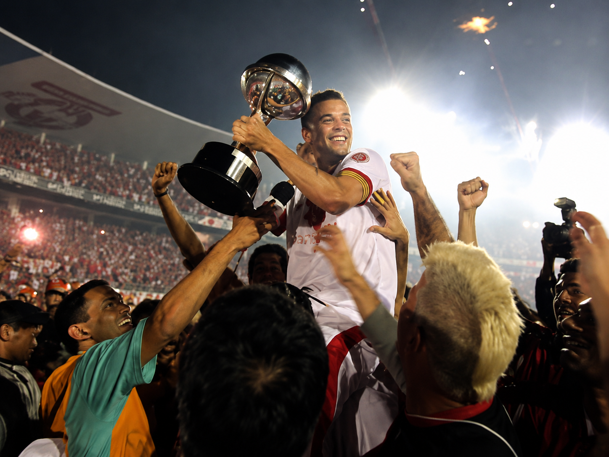

O título que completou a coleção internacional do Colorado
Em 2008, o Internacional alcançou mais uma conquista histórica ao vencer a Copa Sul-Americana. O torneio reunia importantes equipes do continente e representava uma oportunidade de ampliar ainda mais o prestígio internacional do clube. Com uma campanha segura e consistente, o Colorado mostrou qualidade técnica e personalidade para superar adversários difíceis e chegar à decisão.

Na final, o Internacional enfrentou o Estudiantes de La Plata, tradicional equipe argentina. Após um empate sem gols no primeiro confronto, o Colorado venceu por 1 a 0 no Beira-Rio, com gol marcado por Nilmar. A conquista transformou o Inter no primeiro clube brasileiro a conquistar todos os principais torneios organizados pela CONMEBOL na época, reforçando o período dourado vivido pelo clube e eternizando mais uma geração de ídolos na história colorada.